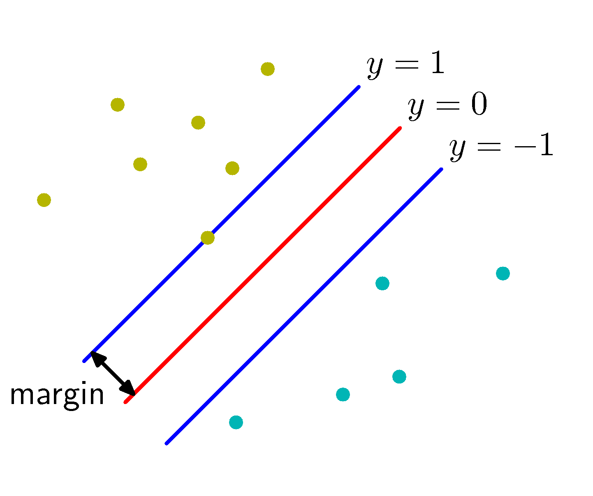
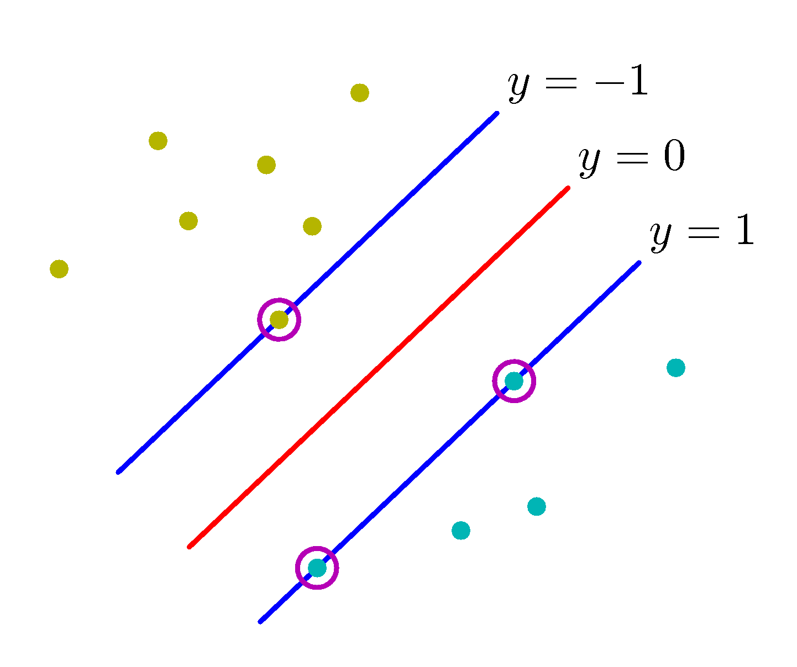
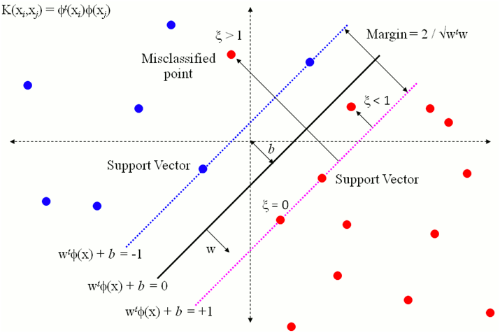

Support Vector Machines
In the development of the concept of kernels, we mentioned that these can be used to derive non-linear decision boundaries. What we haven’t addressed, is how good these can be - for example in separable datasets there can be many (or infinite) number of boundaries that separate the two classes but we need a metric to gauge the quality of separation. This metric is called the margin and will be geometrically explained next.
Classification Margin
Intuitively margin is the distance between the classification boundary and the closest data point(s) of the two classes, as shown below:
 Classification Margin
Assuming a linear classifier of $g(\mathbf x) = \mathbf w^T \phi(\mathbf x) + b$ and a separable dataset for the moment, the maximization of the margin leads to a decision boundary, $y(\mathbf x)=0$ that depends only on a subset of data that are calling support vectors as shown below for the specific dataset.
 Support Vectors
Just like in the perceptron case, since
$$y( \mathbf x_i ) = \begin{cases}>0 & \text{if} \ y_i = +1, \\ <0 & \text{if} \ y_i = -1 \end{cases}$$
for all training data we have,
$$y_i(\mathbf w^T x_i + b) > 0$$
So we are after a $\mathbf w \in \mathbb{R}^n$ that satisfies this constraint. Before we proceed, let us define geometrically what the margin looks like. Let us define two parallel lines on either side of the decision boundary as shown in the above figure,
$\mathbf w^T \phi(\mathbf x) + b = 1$
$\mathbf w^T \phi(\mathbf x) + b = -1$
Let us assume now that there is a data point that is very close to the decision boundary and just marginally satisfied the inequality $y_i(\mathbf w^T x_i + b) > 0$ for example $y_i(\mathbf w^T x_k + b) = 0.2$. If we scale both sides we can reach an equivalent condition that is appealing mathematically $y_i(\mathbf w^T x_i + b) > 1$ - equivalent as it will result in the same $\mathbf w$. In addition to this scaling, it is very useful to normalize $\mathbf w$ as
$\hat \mathbf w = \mathbf w / ||\mathbf w||$
For a point $\mathbf z$ that is in the margin defining line $\mathbf w^T \phi(\mathbf x) + b = 1$ we can calculate given a margin distance $\gamma$ the point it projects to the decision boundary line which is defined by the normalized normal vector $\mathbf w$ as, $\mathbf z - \gamma \hat \mathbf w$. Then we can write two equations that satisfy these two points:
$\mathbf w^T \phi(\mathbf z) + b = 1$
$\mathbf w^T \phi(\mathbf z - \gamma \hat \mathbf w) + b = 1$
given that we are dealing with linear decision boundary in this specific problem, we can eliminate $\phi$ as there is no transformation involved and subtract the two equations. Solving for the margin $\gamma$ we obtain,
$\gamma = \frac{1}{||w||}$
Optimization problem statement
We are now ready to write the optimization problem that will maximize $\gamma$ or minimize $||\mathbf w||$ or equivalently minimize a monotonic function of $||\mathbf w||$.
$\min \frac{1}{2}||w||^2$
$\ \text{s.t.} \ y_i\mathbf w^T x_i + b > 1$
This is a convex optimization problem (we have linear constraints and convex objective function) and therefore there are efficient ways to solve it. In practice, ML frameworks have built in solvers that can provide the $\mathbf w$ given a dataset. Understanding the solution is instructive but it requires background in convex optimization theory and the concept of Langrange multipliers. For this reason, the math in the “Under the hood” section of chapter 5 of Geron’s book will not be in the midterm or final exams but the intuition behind maximizing the margin is in the scope of the final exam.
To provide an intuition of how the kernels and the SVM classifiers are connected, it suffices to write down the dual form of the optimization problem and surely enough in this form the solution involves dot products in the data space. In general, any SVM problem can be kernelized if we expand the data space using a suitable kernel which means that SVM is able via the kernel trick to find efficiently max margin decision boundaries of any shape.
For non separable datasets the optimization problem statement can be written using slack variables $\xi_i$ that relax the constraints and therefore result into $\mathbf w$ and $b$ that tolerate some classification errors for good generalization ability.
$\min \frac{1}{2}||w||^2 + C \sum_i \xi_i$
$\ \text{s.t.} \ y_i\mathbf w^T x_i + b \ge 1 - \xi_i$
$ \ \ \ \ \ \ \ \xi_i \ge 0$
The slack variable defining how much on the wrong side the 𝑖th training example is. If $\xi =0$, the point was classified correctly and by enough of a margin; if it’s between 0 and 1, the point was classified correctly but by less of a margin than the SVM wanted; if it’s more than 1, the point was classified incorrectly. A geometrical view of the above is useful.

Once again the ML frameworks that you will work with, provide in their documentation explicit mention about variables of the optimization problem statement above (such as $C$). However as $C$ must be explicitly set by the data scientist, or optimized using hyperparameter optimization techniques, it is instructive to comment that $C$ is equivalent to the $1/\lambda$ regularization parameter we met in the very beginning of these lectures where we penalized the weights of linear regression to avoid overfitting. $C$ as you can see from the optimization problem objective function if set too high, even a slightest ammount of slack will greatly penalize (add) to the objective and therefore will drive the decision boundary towards “hard” SVM decisions. This is not good news as the SVM must in many practical cases avoid over-sensitivity to outliers - too large $C$ can lead to driving the decision boundary towards outliers significantly increasing the test (generalization) error. If $C$ is set to $C=0$ then any ammount of slack will be tolerated and then the decision boundary may result into too many misclassifications.